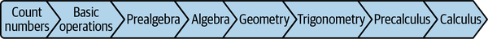
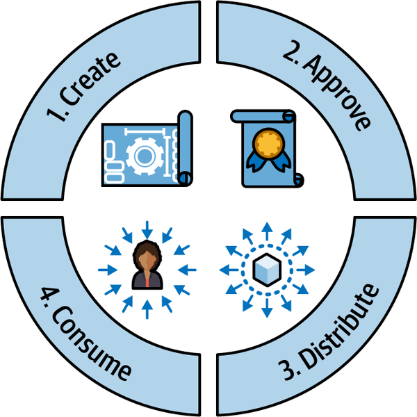
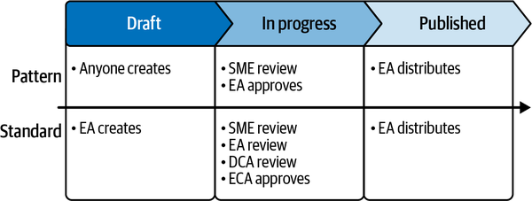
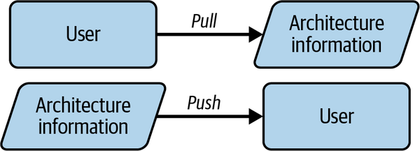
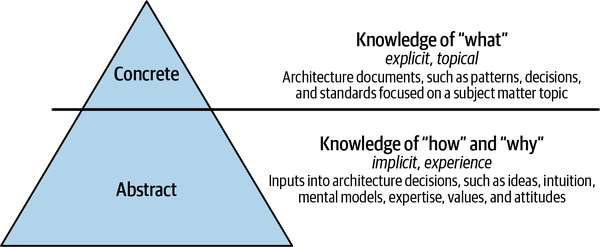
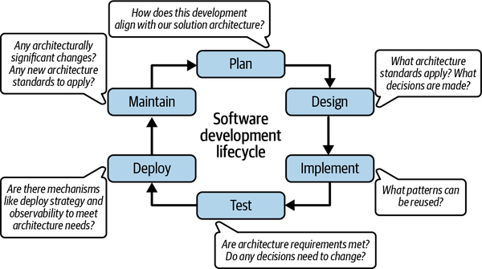
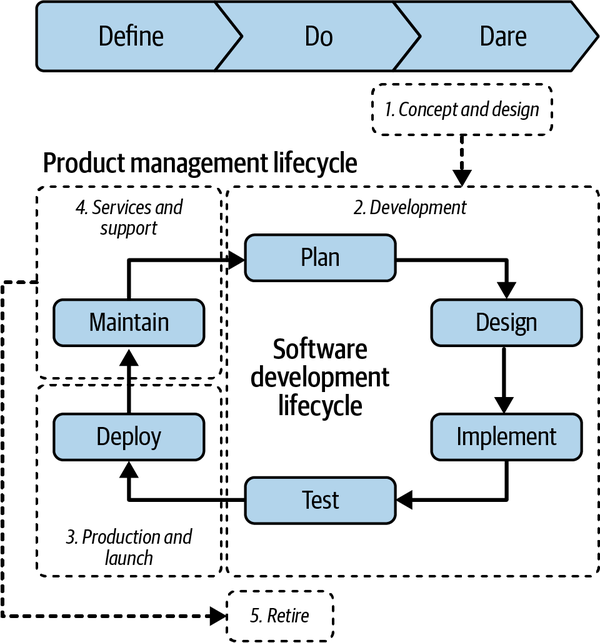
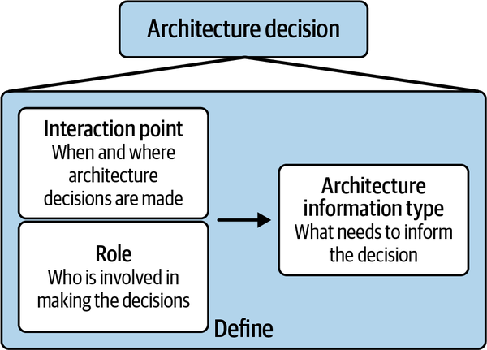

Chapter 2 shared that the second key strategic objective for an effective enterprise architecture strategy is to make architecture information embedded and accessible to all practitioners of architecture and their partners. It’s important to be deliberate and thoughtful on what architecture information needs to exist, and how to make it easy for end users to understand and use it.
Have you ever felt overwhelmed with the amount of information that you’re expected to consume and act on in a single day? Between emails, messaging applications, and websites, just a few ways that you see digital information on a daily basis, it is difficult to know what information to retain and when to use it. Do this, do that, know this, look up that, remember to tell that person something…the digital age of information is relentless.
Thus, when it comes to enabling great architecture decisions, it is necessary to be very deliberate in figuring out how to make architecture information available to all those involved in making an architecture decision. Solving this problem brings best practices together from knowledge management and user interface (UI)/user experience (UX) design.
This chapter reviews these concepts and also dives into common mechanisms, principles, and a framework that you can use to define key results (KRs) for the objective of making architecture information embedded and accessible.
Knowledge management is the processes and tooling around creating and using knowledge across an organization. An enterprise architecture organization is well positioned to establish knowledge management processes and tools around architecture information.
The goal of knowledge management in an architecture context is to teach the users of the architecture information—architects, product managers, engineers—how to apply the knowledge gained from architecture information to solve similar or new problems. For example, it should be possible to understand a pattern about event-driven architecture and another pattern about extract, transform, and load (ETL) processes to apply them together in an application to process real-time data events.
It probably comes as no surprise to learn that I am a big believer and advocate of education and the power of knowledge. The reason that the second objective of an effective enterprise architecture strategy centers around making architecture information embedded and accessible is that it puts the power of architecture knowledge into the hands of those who most need to learn that knowledge to apply it to solving problems. And solving problems effectively and consistently needs to be done at scale—by all architects.
Chapter 3 established a culture of trust as a prerequisite for creating shared alignment. A culture of trust also applies to this objective. Only a culture that promotes knowledge sharing and the value of learning can support establishing an effective enterprise architecture strategy. The opposite of this culture is a competitive culture that actively inhibits transparency, openness, and sharing. Of course, a culture of trust doesn’t mean ignoring data protections—confidential and sensitive data should not be as open as other kinds of information.
A culture of trust—with values of transparency, openness, and knowledge sharing—is a prerequisite to making architecture information embedded and accessible.
Now, that doesn’t mean that there aren’t differing levels of knowledge and expertise. Such differentiation may be necessary to consider in managing the architecture information. For a real-life example, take mathematics. To do calculus, you first need to learn precalculus, which in turn requires trigonometry, and so on and so forth, as illustrated by Figure 4-1.

Generally speaking, more people will need to know the simpler knowledge on the left than the more complex knowledge on the right. Similarly, with architecture information, everyone may need to understand architecture principles to apply them to decision making, but fewer people may need to understand complex architecture patterns like solving for eventual consistency in a multiregion system.
Although architecture information comes in different types, and has variances in the levels of comprehension needed, there is a common need to establish a knowledge management lifecycle to create, disseminate, and maintain that information.
The enterprise architecture strategy function would define lifecycle management stages as shown in Figure 4-2 in detail for each architecture information type.

Create refers to the initial stage of ideation and drafting the architecture information content. Consider who should create what architecture information type, how they should collaborate, and how to incentivize them to contribute information. There should always be an owner of architecture information that takes accountability and responsibility to keep the information fresh and accurate.
After the creation stage, it is possible to have an approval stage. Not all architecture information types need approval—only those that need to be curated, like standards. The desired level of veracity and quality of the architecture information type dictates the amount of rigor and layers of approval. For instance, more review and approval may be needed for a new architecture standard than for a new architecture pattern. As a result, you could end up with tailored approval workflows such as the example illustrated in Figure 4-3.

The distribute stage refers to disseminating the information out to the end users. The most common mechanisms for making architecture information available in this stage are push and pull, as described in Figure 4-4.

Push means that the source of the information provides the information to the human user. This is generally a passive way for the human user to consume information. For example, an organization may use email newsletters to publish information. The email may be full of good information, but the human user may not remember to use the information when it becomes relevant to an architecture decision or may not even read it to absorb the information. I know that as a human user I am not alone in skimming my emails.
Pull means that the user triggers the action of receiving the information, and is therefore typically motivated to consume the information. An example of a pull mechanism is self-service search. The effectiveness of search varies depending on the user’s ability to understand and describe what they are looking for, as well as the richness of the metadata provided with the information being searched. Ever do a keyword search or converse with an artificially intelligent chatbot? If so, you know exactly what I am talking about.
Table 4-1 compares push and pull.
| Mechanism | Pros | Cons |
|---|---|---|
|
Push |
Scales to large audiences of consumers easily. |
Does not ensure active engagement by the human user. If the time at which the information is consumed is disconnected from the time that it is needed to make an architecture decision, there is a risk of lacking effectiveness. |
|
Pull |
Ensures active engagement by the human user. |
The effectiveness of targeted results depends on the information architecture, coverage, and experience available for the information. |
All of the architecture information types defined in Chapter 2 (for example, architecture principles, standards, frameworks, patterns, best practices, diagrams, and decisions) can be provided with either a push mechanism, a pull mechanism, or both. However, given the trade-offs explained in Table 4-1, it is of the utmost importance to consider usability and effectiveness.
For example, providing a common documentation knowledge management repository is a fairly straightforward and common way to provide architecture information. However, just having a repository that stores information isn’t enough. Even enabling a robust taxonomy and search pull mechanism isn’t enough. Coupling this repository with push mechanisms to pick up specific, relevant bits of information can work very well, particularly when that push mechanism is embedded into a process.
It is more effective to build push and pull mechanisms into the processes, tools, and experiences that result in architecture decisions, rather than siloing architecture information into an independent standalone solution.
Finally, the consume stage refers to the act of end users using the information to gain knowledge and to potentially improve it. It’s important to consider continuous improvement as part of this knowledge management lifecycle.
Knowledge that is gained comes in different forms, as described in the next subsection.
Knowledge gained from architecture information is both concrete and abstract. Concrete knowledge is predominantly topical and explicit, whereas abstract knowledge is implicit and absorbed through experience. Figure 4-5 illustrates these concepts further, to show at a high level how concrete knowledge is used to clarify what needs to be known while abstract knowledge guides how and why people use knowledge a certain way. Concrete knowledge is what you see, and it is proportionally less in volume than the abstract knowledge that you cannot see, yet the usage of the concrete knowledge heavily depends on the abstract knowledge.

Topical refers to knowledge specific to a subject matter area. For architecture, this relates to information types like best practices, patterns, principles, and standards associated with a specific business area or technology domain. Chapter 1 discussed specializations within the architecture field, like security or cloud, which are examples of topical areas.
Explicit refers to knowledge that can be clearly stated and is easy to document and share. In architecture, all information types need to be explicit to be shared, from architecture diagrams and decisions to patterns and standards.
Implicit refers to knowledge that is the opposite of explicit; it is knowledge that is not clearly stated or easy to document and share. For example, unwritten rules, ways to navigate in an organization, understanding motivations, intuition-based decisions, undocumented historical knowledge, anecdotal experiences—all of these can be valuable when shared to support more effective architecture decision making. However, implicit knowledge is typically shared organically through conversations rather than with deliberate strategic intent. An enterprise architecture organization could consider what implicit knowledge should become explicit and provide the mechanisms necessary to do so—for instance, mining existing solutions for patterns through a community of practice, which is a group of like-minded people exchanging ideas. (See Chapter 5 for more in-depth discussion of the community of practice.)
Experience refers to knowledge gained from personal experience. The adage that experience is the best teacher comes to mind. From an architecture perspective, this applies to learning by doing and is inclusive of learning from mistakes. You have to prove architecture theory through implementation experience. This could mean that if you are the architect, you implement the proposed solution yourself or by influencing an engineering team to do the implementation for you. You observe what works well and what doesn’t and apply those lessons learned to the next problem. You could then share those lessons learned and how the proposed solution works in the form of an architecture pattern. If you are in the enterprise architecture organization, this experience principle could translate into not approving an architecture pattern for reuse until the pattern has been proven by at least one implementation.
I’m reminded of a simple real-life example to describe this point. When my kids were little, they didn’t like to wear hats and gloves. Although I could tell them to do so when the weather was cold and hope that they learned from listening, or I could lead by example and hope they learned from observing, neither of these mechanisms were effective. What actually sustained their learning was having them go outside, experience being cold, and realize that they preferred to be warm through the use of hats and gloves.
By strategically supporting knowledge management of architecture information as part of the objective to make architecture information embedded and accessible, the enterprise architecture strategy should result in several benefits described in the next subsection.
Ever hear the saying, “If a tree falls in a forest with no one to hear it, does it make a sound?” Similarly, if architecture information is produced with no one to reuse it, does it add value?
If you do knowledge management in the context of architecture information right, you can get the right information to the right users at the right time to solve their problems. This requires both an optimized knowledge management lifecycle and the ability to extract implicit and experience-based knowledge to make it shareable and explicit. This is usually a significant optimization because it does the following:
It leverages lessons learned from previous mistakes to allow learning from failures without having to repeat those mistakes.
It reduces time to market by enabling reuse of knowledge and solutions.
It avoids knowledge hoarding, silos, and bottlenecks where knowledge is trapped only in the heads of a few people. It empowers the masses by sharing that knowledge freely and making it available and retainable for everyone who needs to know it.
Better communication, transparency, and quick access ensure that users always have the latest and greatest information and are never operating with stale information.
Ultimately, you will avoid frustration and increase human satisfaction by enabling users to be successful with the right knowledge at the right time. Speaking of humans, in addition to knowledge management, it is also useful to be familiar with UI/UX design, the topic of the next section.
Given that humans are the key recipients of gaining architecture information knowledge, it is necessary to consider human needs in the forefront of the embedded and accessible architecture information objective. That is what UI and UX design helps with.
UI design emphasizes look and feel to interfaces or access points used by humans. Good UI design seeks to create easy-to-use, satisfying, and delightful interfaces. These interfaces include graphical user interfaces (GUI), like web or mobile where users interact with graphical elements, and voice-controlled interfaces (VCI), like smart assistants where users interact through voice commands. For example, the knowledge repository website that human users interact with to find architecture information is a GUI.
Chapter 1 stated that an effective enterprise architecture practice overcomes siloed decision making; UX design breaks down silos in the human experience. It is more holistic than UI design in that it considers the entire user experience across a spectrum of interfaces and beyond.
The use of architecture information is necessary in a variety of experiences that require outputting architecture decisions. For example, perhaps one experience is around understanding what solutions already exist to provide a capability before building or buying a new one. Another experience could be around designing a software application prior to building out its code, and deciding on key architectural elements, like what technologies it uses, how to deploy it, and how to make it highly available. It is highly probable that each of these experiences leverages multiple UIs that need to work together to construct a seamless experience.
The enterprise architecture enablement function should partner with whomever is necessary in the organization to ensure that architecture information is leveraged as part of software delivery experiences. It should be a natural consequence of building software to use embedded and accessible architecture information, rather than a one-off, siloed experience to have to go and find it, as shown in Figure 4-7.

As you can see in Figure 4-7, many questions can and should be asked by a software delivery team that pertain to architecture during software development.
For instance, while planning new software investment, it is necessary to be deliberately aligned with the solution architecture work conducted to define a capability target architecture. If this new work is not aligned with that capability target architecture, why not? Does that capability architecture need to be updated? Or is this new work in fact duplicative or not needed from a business perspective? The architecture information that needs to be presented here to inform this decision is associated with the capability target architecture and what capability this new planned investment provides. The ability to compare and contrast is also helpful.
UX would consider the plan experience to figure out the most optimum way to present this information. UI would consider the interfaces themselves; perhaps there is a catalog that indexes existing capabilities and solutions, and perhaps there is a GUI that shows approved capability target architectures that are easily understandable.
Thus, both UI and UX focus on keeping the human user’s needs and goals in mind, to create products that are simple and enjoyable to use. UX solves for the overall human user experience, and UI solves for the interactive elements that the human user uses inside that experience. Together, these provide benefits as shared in the next subsection.
While there are many benefits of a high-quality UI and UX design, I emphasize the top three benefits when it comes to using UI and UX with architecture information:
Humans are the consumer of architecture information, and as such, they must be able to optimally use the information. UI/UX design emphasizes this and designs for usability first, avoiding costly rework later.
As a consequence of optimal design, humans can be self-serviced with fresh, accurate, and easily understandable architecture information. This reduces churn, questions, and the need for a handful of experts to be available to explain the architecture information, which in turn also reduces bottlenecks in the overall UX process.
I mentioned earlier how important it is for architecture to be seen as an enabler, as part of building software as one team. UI/UX design can help promote this brand identity by ensuring that architecture information is easy to use and embedded and accessible directly within the software development process and tools.
The enterprise architecture enablement function is best positioned to figure out what the experiences are and to advise the strategy and governance functions on how to best simplify and deliver delightful experiences. It can do so by applying a number of principles that stem from knowledge management and UI/UX design. Let’s look at these principles next.
Knowledge management and UI/UX design together provide a core set of principles with which to guide achieving your embedded and accessible architecture information objective. These are principles that you can work to establish for your organization when operationalizing the roles, processes, and tools for creating, organizing, and using architecture information.
This section covers principles to apply throughout the knowledge management lifecycle stages:
Champion knowledge sharing.
Many over few.
Just in time, transparent to find, single source of truth.
Easy and enjoyable, flag it or fix it, measure to improve.
Let’s start with championing knowledge sharing.
This principle is helpful to instill a culture of trust around knowledge management. The act of sharing knowledge should be recognized and rewarded, preferably publicly. There should be incentives, such as public praise, gamification rewards, and/or performance management acknowledgement.
Applying this principle could lead to a culture where the following occurs:
Leaders explain how knowledge management of architecture information is a part of everyone’s role and responsibilities. They partner with the enterprise architecture enablement function to establish the mechanisms used to create, update, and disseminate architecture information. They publicly recognize and reward behaviors around architecture information knowledge sharing and encourage reuse.
Perhaps there is a role called knowledge champion, whose duties are to encourage people to follow all of the knowledge management practices and contribute their architecture information knowledge. Sometimes the knowledge champions take ownership of certain topical areas. Other times, they primarily collaborate with other people to encourage them to contribute and use architecture information.
The champion knowledge sharing principle helps create a culture that promotes knowledge sharing. How do you then encourage and scale knowledge contribution? The next principle, many over few, helps do that.
Another key principle to enable accessibility of embedded architecture information is many over few. This means that the knowledge of many is often better than the curated knowledge from the few. In other words, architecture information should be provided by the audiences that are meant to use them, not just curated by a select few trusted sources.
A wiki is a good example where information is managed by many people, for many people to easily consume. The great thing about wikis is that information evolves quickly and grows based on what information is perceived to be most useful. On the other hand, the information is not always trusted or accurate.
The encyclopedia is a good example of a source of truth that is curated by a few experts, for many people to consume. The great thing here is that the information is definitely trusted and accurate. However, it takes more time to scale and grow the information, and it is not always focused on what people most need to consume.
Architecture information is typically somewhere in between the wiki and the encyclopedia approach. For example, many people in many roles should consume and contribute to architecture patterns. It may still be necessary to have a lightweight governance process to ensure the accuracy and integrity of an architecture pattern, but there is no need to restrict contribution to a few trusted sources.
So, with the first two principles of champion knowledge sharing and many over few, you have a culture that both promotes knowledge sharing and is inclusive of a large audience to engage in knowledge sharing. Now, you need to make sure that the architecture information that is created from these efforts gets to the right users at the right time.
To embed architecture information into the processes, tools, and experiences that result in architecture decisions, a key principle is just in time. Just in time in this context refers to having the architecture information needed to inform the architecture decision at the time that the decision is being made.
A real-life example that occurs frequently for me is getting dressed. The getting dressed decision is informed by a number of factors:
For instance, wearing clean clothes is a good thing.
For example, there is a dress code for professional attire.
Patterns can include how the clothes coordinate with each other in terms of colors, shapes, and types.
Includes the weather and the destination.
It is therefore helpful for me, when I am getting dressed, to know just in time what the weather is like today and what clean clothing is available that meets the standards for where I am going. I use pull mechanisms to check my weather app for today’s weather, and my closet for clean clothes. I use a push mechanism to then broadcast the weather to my kids so that they can also dress accordingly.
Going back to Figure 4-7, let’s look at that planning decision again. Is it more helpful to have capability information available when I need to decide on investing in new technology or when I’m already building new software? According to the figure, it’s better to have that information available just in time when I am about to make that decision. So, you would need to determine what process and tooling humans are using when they make that decision, and how you can make this information available there, at that exact point. Is it as simple as a deep link to your capability target architectures and capability catalogs? Or is it more sophisticated, with machine learning prompts that bring similar capabilities to the human user’s attention? Or maybe something in between?
With just in time, architecture information is available at exactly the right time. The next principle complements just in time to make sure that the information is transparent and available at any time.
Recall that transparency is key to building trust, especially in an architecture decision process. Knowledge in general should be easy to create, find, and search, which means that architecture information by extension should be easy to create, find, and search. It should be very transparent and ideally intuitive to human users on how to create, and where to find, architecture information. If someone has to go hunting for a bit of architecture information, that’s a tell-tale sign that the information is not transparent enough.
I once had a chief architect tell me that my application target architecture didn’t exist if it wasn’t linked correctly in the configuration management database that cataloged applications. It didn’t matter that I’d produced the deliverable in collaboration with the engineering team and could produce a link when asked. It needed to be transparent for anyone to find it where they would be looking for it. I’ve taken that feedback to heart ever since, to ensure that my architectural outputs are transparent and easy to find.
Both just in time and transparent to find allude to an authoritative source of information. The next principle, single source of truth, covers that notion explicitly.
The single source of truth principle ensures that there is only one authoritative source to find a particular bit of architecture information. This principle avoids proliferation, or having multiple places to find the same information, which can cause confusion and increase maintenance headaches around maintaining duplicative information.
Based on the preceding transparency principle, it should be very clear what the source of truth for the architecture information is. For example, if someone writes a blog post that includes an architecture pattern, that should not be trusted with the same level of authority as the architecture pattern catalog that acts as the source of truth for approved architecture patterns in the organization. The author of the blog post should be commended for taking the time to share their knowledge and encouraged to contribute their pattern to the official source of truth and link to it for broader impact and wider reuse.
We’ve now looked at principles that can be applied for architecture information to be created, approved, and distributed. Next up, and just as important, are principles around using that architecture information, starting with easy and enjoyable.
Earlier, I alluded to easy understanding. This is the last key principle—architecture information needs to be usable, meaning easily understood by its intended audience. The information should be very simple to understand, very clear in its main points, and very relevant to the audience. Simple often means short—clear and concise. These concepts apply to both visual types of architecture information, like diagrams, and written types, like documents.
Brevity and simplicity are key to usability.
In UI/UX, there is a concept of invisibility and intuitiveness. This means that humans don’t care about the design per se, they care about getting their job done, and therefore the design should strive to be invisible and intuitive such that users can do the right thing without much effort. I emphasize this for architecture information. End users don’t care about the beauty and elegance of a pattern or diagram so much as they care about whether or not that artifact applies to the problem that they are trying to solve.
Also in UI/UX, there is an emphasis on enjoyment and delight, or evoking good feelings through good design. This is important because humans are the end users, and it is human feelings that get associated with the brand they are using, which leads to their satisfaction to make them want to come back and helps them retain the information and gain knowledge. Delight can be attained by anticipating what humans might do with the information and ensuring that the design helps them do it as frictionlessly as possible, with reduced cognitive load. This could entail ensuring familiarity, meaning understanding what humans already expect when they see an element or hear a term. This also could encompass consistent and predictable elements like fonts, colors, and icons, which in turn promotes brand.
In architecture, speaking in universal terms is very important. Don’t redefine well-known industry terms for your own purposes.
The easy and enjoyable principle also includes efficiency. Efficiency in this context refers to understanding that new users may need more guidance, whereas experienced users may bypass certain workflows to speed up their experience. Similarly, efficiency relates to flexibility, which allows users to customize their experiences as needed.
Last but certainly not least, this principle always includes accessibility, meaning the information can be available to any user, including those with disabilities. See Section 508 for US federal government guidelines on accessibility.
So now architecture information has been created and distributed and is easy and enjoyable to use. That’s great, but it needs to be sustainable as information changes. How to keep information up to date? The next principle, flag it or fix it, addresses this question.
Flag it or fix it is a mechanism that complements the principle of many over few. For instance, if an architecture pattern is out of date, it is good for a consumer of that information to be able to fix that information or, if unable to directly fix it, to flag it to the author for review to fix.
Enabling consumers to fix it inspires contribution. Being able to flag it allows for proactive continuous improvement. Maintaining the freshness and accuracy of architecture information in the face of change—changing requirements, changing organizations, changing technology—is a daunting challenge to overcome. Putting the power of identifying changes and updating information accordingly in the hands of the users is a scalable mechanism to provide such assurance.
Feedback is an intrinsic part of both knowledge management and UI/UX. Flag it or fix it is a great way to get feedback directly from human users. Another way to get feedback is to measure to improve.
As with any architecture standard, you will want to understand the efficacy of your architecture information. What is being used? What is not? More to the point, what is effectively being used? What is not?
To answer these questions, it is necessary to figure out how to measure what is working and what isn’t. Is there a way to understand how often architecture information is being read and how often it is being used in the software delivery process? Are there too many clicks to find architecture information? These are some examples of questions you can ask to figure out what to measure, how to measure, and what to do with the metrics that you attain.
The principle here is to make architecture information creation and usage measurable, so that you have data points to base improvement on.
How do you use all of these principles as part of your effective enterprise architecture strategy? The next section puts them into a framework that you can use to assess your organization and identify opportunities for your KRs that support the objective of making architecture information embedded and accessible.
The embedded and accessible architecture information framework focuses on usability rather than on any one specific architecture information type. Working backward from the outcome of easy and enjoyable usability, the framework follows the sequence of define, do, and dare in a continuous feedback loop across both the product management lifecycle (PMLC) and software development lifecycle (SDLC), as illustrated in Figure 4-8.

The reason that the PMLC is included is because architecture starts with business intent. Long before a technology is ever chosen, or the software created, there is first an architecture decision as part of the initial product concept and design phase that determines whether investment in a new capability is even needed as part of a capability target architecture. The next three phases of the PMLC overlap with the SDLC. Finally, there’s a retire stage when the solution providing the capability is no longer needed, either because an alternative replaces it or the capability itself is deprecated.
The define, do, dare framework covers making architecture information embedded and accessible at all architecture decision points throughout this PMLC and SDLC. Let’s start with the first stage, define.
The first stage, define, establishes specific details of what architecture information is used by whom during specific interactions in those lifecycles, as shown in Figure 4-9.

The define stage is predicated on first defining what the interaction points are. At what points in the product lifecycle and software lifecycle are architecture decisions needed? A few examples are listed by lifecycle stage as follows:
Evaluate new product intent and determine the strategic technology direction to fulfill that intent.
Confirm the bounded context of the new software solution and ensure that the new software fulfills a unique business need and that it should be built or bought. Confirm alignment such that the new software aligns with the capability target architecture for the architectural domain that the new software supports.
Provide a high-level application architecture design that decides on technology choices, pattern choices, interactions between this new application and existing ones in the technology landscape, and any related architectural decisions based on application characteristics like data protection or availability needs.
Decide the details of tuning implementation patterns and determine whether any learnings require revisiting application architecture decisions.
Evaluate whether or not architectural requirements were met.
Make architecture decisions with regard to deploy considerations such as deployment strategy, resiliency, reliability, and observability.
Review any change that impacts the application architecture, whether that change is instigated by new capability needs or by new requirements.
Update capability target architectures to reflect the retirement of an existing software solution. Determine whether to transfer assets owned by this software solution to an active software solution or to deprecate them entirely.
In what processes are these points hit? What tools are humans working with when they hit these points? Answering these questions will round out your definition of each interaction point in which an architecture decision is made.
In addition, you need to define what user persona or role is engaged in each interaction point. For each interaction point, who are the personas or roles that need to interact with architecture information? Let’s review the examples again, this time with example roles added:
Solution architect partners with product lead to evaluate new intent.
Application architect confirms bounded context, unique capability, and build versus buy decision in partnership with product and engineering leads. Solution architect confirms capability target architecture alignment.
Application architect provides high-level application architecture design and patterns in partnership with product and engineering leads.
Application architect in partnership with engineering lead reviews implementation.
Engineering lead consults with application architect on remediation.
Application architect in partnership with engineering lead determines deployment architecture.
Application architect partners with product lead on new intents and with engineering lead on new requirements.
Solution architect updates capability target architectures after consulting with product and engineering lead. Application architect may be engaged around transfer or deprecation decisions of assets, as those decisions may affect the bounded context of existing software solutions.
By methodically defining each architecture decision’s interaction point and the roles involved, you will determine what architecture information types are necessary to support that interaction point. Here are the examples one more time with the architecture information types:
Capability target architectures, architecture principles
Existing capabilities and the solutions that provide them, capability target architectures, architectural domain mapping, build versus buy assessment framework
Application architecture templates, architecture principles, architecture standards, requirements, patterns and best practices, relevant decisions
Architecture patterns and best practices, relevant decisions
Architecture standards and requirements, and associated patterns
Architecture standards, requirements, patterns and best practices
Capability target architectures, architecture standards and requirements
Capability target architectures
Now that you know what architecture information types are necessary for each interaction point, it’s time to figure out how that information will be used by the roles involved. The next stage, called do, goes into this step in depth.
The second stage, do, determines how the architecture information type will be used in each interaction point by each role.
How should consumption occur by the specified role in the interaction point? Should the information be passively consumed, where the onus is on the end user to apply choice, or dynamically consumed via a guided experience?
For instance, let’s look into the details of making an application architecture design decision around high availability in the development-design stage. If there is a process to draft and review application design, and tooling to support that process, then a guided experience could inform the product and business leads of any relevant standards, intake their availability requirements, and pass that context along with relevant principles, standards, patterns, diagrams, and decisions that apply for this specific application to the application’s engineers, developers, and architects.
If there is no such tooling, then manual steps can be taken to guide users to the same outcomes; for example, establishing templates for this kind of decision that links out to the relevant architecture information material. Or using a push mechanism from the process to alert the end user to pay attention to a specific piece of architecture information.
The exact details and possibilities will differ based on the maturity of your organization’s processes and toolings. By the end of this stage, though, you will have determined the best consumption mechanisms and any changes needed to get to that end state for each interaction point that supports making an architecture decision in the PMLC and SDLC. But you’re not done yet! The last stage of the framework, dare, explains why.
The last stage of the embedded and accessible information framework is dare. Dare to challenge to ensure that the architecture information is truly effective—effectively created, effectively distributed, effectively consumed. Continuous learning and improvement are how you make things better and more optimal.
Use the flag it or fix it and measure to improve principles to ensure that a usability feedback loop is built into the interaction such that you can measure effectiveness; for example, user satisfaction, number of clicks, or duration on a page.
Similar to the do stage, the exact details of feedback loops and measurement will differ based on your organization’s tooling and processes.
Let’s review a few case studies and examine some thematic dos and don’ts that they reveal, using the EA Example Company. The first scenario is the new enterprise architecture standard.
EA Example Company’s enterprise architecture team diligently followed the company’s processes to define a new standard around software languages, to narrow what software languages were approved for usage. This standard impacted all software engineers. In accordance with their processes, the enterprise architecture team socialized the standard to subject matter experts and senior leadership with direct briefings. They also published the standard on their website and announced the new standard in a newsletter that reached senior engineering leadership.
Software engineer Sasha stumbled onto the standard when she came across the enterprise architecture website, while searching for a different piece of information. Sasha told her teammates and was sure to use an approved language for the next piece of software they developed.
Software engineer Tony learned about the standard when his manager forwarded the newsletter to him. Tony realized that his application was written in a language that was not on the approved software list. He alerted his manager, and his manager, Tom, said that there was no sense in refactoring to convert to the approved software language. So, Tony continued development with his original software language.
Software engineer Mike didn’t get the newsletter, or see the website. He used an approved software language purely by coincidence.
Software engineer Gina started a new job with EA Example Company and did not know about the standard; she recommended using a software language that she was familiar with to her team that was not actually on the approved software list.
Over time, the enterprise architecture team realized that their standard was not particularly effective.
What happened here?
A one-time push campaign was used, which was not a sustainable mechanism to ensure that the roles that needed to know about the standard were educated about the standard and could abide by that standard. In addition to the communication mechanisms employed, there should also have been effort around training, perhaps in software engineer onboarding, and/or just-in-time information about standards in software development processes. There should have been an enforcement mechanism as well in the software development processes to check that an approved software language was being used.
Key takeaways from this tale are summarized below.
Do:
Follow established processes to define and approve new standards.
Embark on communication campaigns.
Don’t:
Assume that one-time campaigns are enough.
Stop at educating the current user base; be mindful that users change.
Stop at simply publishing a standard and assume that users will seek it out; instead, work to incorporate the standard into the process and controls that the user will execute.
The next scenario is called the best practices.
EA Example Company’s senior engineering leader, Tom, noticed that his software engineers were spending a lot of time duplicating work in solving the same or similar problems such as application logging. They tended to rely on searching the internet and asking each other for clarifications and answers.
Tom asked his enterprise architecture team for guidance. The enterprise architects decided that if they defined best practices in architecture patterns, they could share knowledge and have all software engineers reuse that knowledge. They set up a knowledge base and published several documents about best practices that they reviewed among themselves. They linked this knowledge base from the company’s internal engineering portal.
Tom was happy to see the knowledge base form. However, as time passed, his software engineers still spent time duplicating problem-solving and still preferred to use the internet and each other rather than the knowledge base.
What happened here?
Patterns were documented, intended for reuse, but were not effectively reused. The knowledge portal was set up with good intent, but it didn’t adhere to the principles mined from knowledge management and UI/UX design that specifically target reuse and many over few. Since the information was not as consumable or as usable as it could have been, the behavior of the software engineers did not change.
In summary, the following are the key takeaways.
Do:
Define architecture patterns tailored for your company.
Incentivize patterns contribution and reuse as part of engineering excellence, for example through gamification and/or as part of performance management.
Make patterns relevant by including them in the processes and tooling that engineers use for solving specific architecture decisions.
Don’t:
Duplicate information widely available in other sources.
Assume the audience knows when or how to use your pattern.
Keep patterns in the curated hands of the few.
The last scenario to examine is called the static artifact.
EA Example Company’s enterprise architecture standard required an application architecture artifact that described how that application interacted with other applications as part of approving that application to launch into production.
Application architect Annie wanted to be a good citizen and comply with this requirement. She asked for a template but did not receive one. She then asked for examples, and received some, but they were quite inconsistent with one another. So she documented a static diagram to fulfill the requirement based on her own experience. The application was approved for launch in production.
Over time, as the application ran in production, there were incidents, and new members of the application team wanted to understand how the application was architected. However, Annie had no reason to update the diagram, having fulfilled the initial requirement.
What happened here?
The architecture artifact was documented as required for the initial system launch, but it was not kept up to date since there was no refresh requirement and it was a highly manual effort to keep up with changes. Also, there was no template with prescribed guidance for consistency across applications.
Do:
Use diagrams to describe systems.
Use standards to keep diagrams consistent. For example, ArchiMate is available for enterprise architecture modeling, C4 model is available for software architecture modeling, and Unified Modeling Language (UML) is available for general modeling.
Don’t:
Make diagrams as static, one-time diagrams:
Think of diagrams as living documents that are updated frequently as part of change management. Ideally, updates can even be prompted by automated events.
Think of ways to make diagrams queryable. If architecture intent is queryable, then it can be compared with reality to diagnose gaps in implementation and can also have rules run against the queryable diagrams to forecast compliance to requirements.
Make diagrams convoluted. Simple diagrams with clean lines, a clear legend, and bounded context are most easily understood.
To achieve the embedded and accessible objective and tailor KRs for your own organization, consider any weak points in your organizational structure and/or processes that may hinder creating usable, effective architecture information across various stakeholders.
Does your culture support knowledge sharing? Leverage knowledge management and UI/UX principles in this quest to make architecture information effectively created, distributed, and consumed across PMLC and SDLC.
Use the define, do, dare framework to uncover opportunities for your organization to make architecture information embedded and accessible during architecture decision making. These opportunities become your specific KRs for the embedded and accessible objective. The framework is summarized as follows:
For each type of architecture decision, first define when the decision is made, in what process and tools, by whom, and what architecture information they need to know as inputs to make a great architecture decision. This part of the framework yields a consistent understanding of interaction points, roles, and the architecture information types needed for each interaction point.
Do the hard work of figuring out how exactly that architecture information is consumed at that interaction point. What is the best way to embed that information and make it accessible, just in time, at that interaction point?
Dare to continuously improve. As architecture information is made available, is it achieving its purpose? What feedback loop and what measurements can you make that provide indications of effectiveness? How can you use this data point to refine your approach?
In the next chapter, we’ll deep dive into the next objective: enable and enforce.